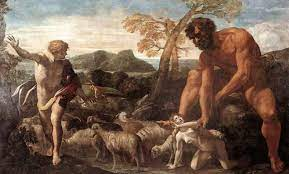
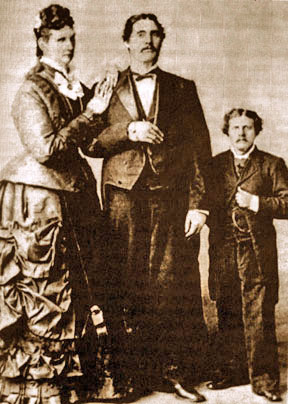
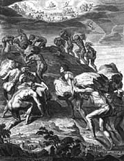
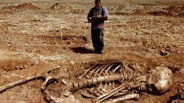

La primera mención de la existencia de gigantes o “seres distintos” en la Tierra aparece en la Biblia, en el Viejo Testamento. En el Génesis 6, versículos 1 y 2, podemos leer:
“cuando los hombres se habían multiplicado sobre la Tierra y habían procreado hijas, viendo los hijos de Dios que las hijas de los hombres eran hermosas, escogieron de entre ellas por mujeres a las que quisieron”.
Los Nephilim (en hebreo gigantes) según se recoge en el Génesis 6, 4, existían en la Tierra por aquel tiempo:
“Por entonces y también en épocas posteriores, cuando los hijos de Dios cohabitaban con las hijas de los hombres y éstas tuvieron hijos, aparecieron en la Tierra los gigantes. Éstos son los esforzados varones de los tiempos primeros, los héroes famosos”.
Su unión con las mujeres de los hombres - debían de ser bastante semejantes a la especie humana para poder acoplarse a éstas - produciría hijos más altos que los terrestres normales. Pero hemos de destacar una particularidad: algunos de los restos osteológicos pertenecientes a “gigantes” encontrados, tenían – como ya veremos posteriormente - seis dedos en cada una de sus extremidades.
La Biblia también hace mención a este dato en Sam. 21, 20 y Paralipómenos 20, 6:
“Hubo una batalla más en Gat, en la que se halló un hombre de alta talla que tenía seis dedos en cada mano y en cada pie, veinticuatro en todo, que descendía también de Rafa”.
Para la Biblia, la raza de los gigantes desapareció con el diluvio pero, al parecer, uno de ellos se salvó. La leyenda nos cuenta que, al no caber en el Arca de Noé, se montó a horcajadas sobre ella.
El gigante era tan grande que su cama medía unos 3,90 metros de largo por 1,80 de anchura. (Deuteronomio 3, 11).
Que en el planeta habitaron gigantes lo demuestra el hallazgo de restos humanos de extraordinarias dimensiones en la India, Tíbet, China, Sudamérica, África ... algunos con una edad aproximada de 45.000 años.
Y no solamente huesos, sino también espadas, hachas, lanzas y otros instrumentos como picos de tal envergadura que para poder usarlos habría que tener una estatura de, por lo menos, ¡tres metros!
Pero veamos algunos ejemplos:
Todos estos ejemplos son una pequeña muestra de los múltiples hallazgos que se suceden por todo el planeta y que no vamos a detallar para no caer en el aburrimiento, pero vamos a proseguir tan sólo un poco más en nuestro territorio.
Algunos investigadores están familiarizados con la teoría de la raza pre-adámica y la creación de las razas que una vez en tiempos remotos habitaron este planeta. Los gigantes son de gran importancia en la historia de la humanidad. ¿Cuánto tiempo atrás en el distante pasado podemos rastrear a los gigantes?
La Biblia nos dice varias cosas interesantes:
Génesis 6:1-4
6:01 Y aconteció que cuando comenzaron los hombres a multiplicarse sobre la faz de la tierra, y les nacieron hijas a ellos,
6:02 que los hijos de Dios vieron que las hijas de los hombres eran hermosas, tomaron para sí esposas de las que eligieron.
6:03 Y Jehová dijo: No contenderá mi espíritu con el hombre para siempre, porque ciertamente él es carne; mas serán sus días ciento veinte años.
6:04 Había gigantes en la tierra en aquellos días, y también después que se llegaron los hijos de Dios vinieron a las hijas de los hombres, y les engendraron hijos: los mismos fueron los valientes que desde la antigüedad fueron hombres de renombre.
Se nos informa que los gigantes, los Nefilim, los " Caídos ", existían en el mundo antediluviano, así como después de la gran inundación.
Siempre se dice que Dios creó a Adán, siendo el primer ser humano de quien se originó el resto de la humanidad, no debemos descuidar la raza pre-adámica, que era de gran importancia y tuvo una influencia significativa en el desarrollo de nuestra historia.
La raza pre-adámica, una civilización que existió antes de Adán, es mencionada en varios textos históricos y mitos de diferentes culturas.
Los primeros relatos de gigantes ocurren en tiempos antes de Adán. En esos días, un grupo de seres celestiales, descendiendo del cielo. Estos científicos divinos manipularon los genes de diferentes tipos de vida animal y, en consecuencia, modificaron genéticamente una raza de humanoides de estatura gigantesca. Estos fueron los primeros gigantes, los pre-adamitas.
De acuerdo con la Biblia, aquellos que desciendieron a la Tierra y se aparearon con las mujeres de la Tierra fueron los "ángeles caídos", (los Vigilantes - the Watchers), un grupo de 200 seres divinos de alto rango. Los gigantes mencionados en el Génesis son, pues, el resultado de la hibridación entre humanos y ángeles caídos.
Las cuentas de los Vigilantes y sus descendientes gigantes son descritas con más detalle en el Libro de Enoc y el Libro de los Jubileos. Desafortunadamente, el Concilio de Laodicea, es decir, la Iglesia católica, prohibió los dos libros y muchos otros en el siglo IV.
Del Libro de Enoc (versión de R.H. Charles), aprendemos más sobre el pecado de los Vigilantes y los gigantes que producen:
Capítulo 6
1 Y aconteció que cuando los hijos de los hombres se habían multiplicado en estos días les nacieron hijas hermosas y bonitas.
2 Y los ángeles, los hijos del cielo, vieron y las desearon, y se decían unos a otros: '. Vamos, y escojamos mujeres de entre los hijos de los hombres
3 y nosotros engendramos hijos' Y Semjaza, quien era su líder, les dijo: "Yo no tengáis miedo;
4 de hecho no estoy de acuerdo con esta acción, y sólo yo tendré que pagar la multa de un gran pecado. "Y todos le respondieron: 'Hagamos todos un juramento y comprometámonos todos por mutuas imprecaciones de
5 no abandonar este plan pero que hagamos esto' Entonces juraron todos juntos y se comprometieron
6 por imprecaciones mutuas sobre ello. Y eran por todos doscientos; que descendieron en los días de Jared de la cima del monte Hermón, y lo llamaron el monte Hermón, porque habían jurado
7 y se habían vinculado mediante imprecaciones mutuas. Y estos son los nombres de sus líderes: Samlazaz, su líder, Araklba, Rameel, Kokablel, Tamlel, Ramlel, Danel, Ezeqeel, Baraqijal,
8 Asael, Armaros, Batarel, Ananel, Zaq1el, Samsapeel, Satarel, Turel, Jomjael, Sariel . Estos son los jefes de diez.
Capítulo 7
1 y todos los otros junto con ellos tomaron para sí mujeres y cada uno escogió para sí mismo una, y comenzaron a ir en ellas ya contaminarse con ellas, y les enseñaron los encantos
2 y encantamientos, y el corte de raíces, y les hizo familiarizarse con las plantas. Y
3 quedaron embarazadas, y concibieron grandes gigantes, cuya altura era de tres mil ells: que consumieron
4 todas las adquisiciones de los hombres. Y cuando los hombres ya no podían sostenerlos, los gigantes se volvieron contra ellos y devoraron a la humanidad
5. Y comenzaron a pecar contra los pájaros y las bestias y reptiles y
6 peces, y a devorar la carne unos de otros, y a beber la sangre. Entonces la tierra puso acusación contra los sin ley.
La misma historia se confirma en El Libro de los Jubileos (versión de R.H. Charles):
Capítulo 5
[1] Y aconteció que cuando los hijos de los hombres comenzaron a multiplicarse sobre la faz de la tierra y les nacieron hijas a ellos, que los ángeles de Dios los vio en un determinado año de este jubileo, que eran hermosos a la vista a, tomaron esposas de los mismos a todos las que ellos
[2] eligieron, y dieron a luz a hijos y eran gigantes. Y la anarquía aumentó en la tierra y toda la carne se corrompió, por igual hombres y ganado y bestias y aves y todo lo que camina sobre la tierra, todos ellos corrompieron sus caminos y sus órdenes, y comenzaron a devorarse unos a otros, y el desorden aumentó en la tierra, y que todo designio de los pensamientos de todos los hombres
[3] (eran) malos continuamente. Y miró Dios la tierra, y he aquí que estaba corrompida, y vio que toda carne había corrompido sus órdenes, y todos los que en la tierra había hecho toda clase de maldad
[4] delante de sus ojos. Y dijo que destruiría el hombre y toda la carne sobre la faz de la tierra
[5,6], que Él había creado. Pero Noé halló gracia ante los ojos del Señor.
Aunque se dice que la belleza de las mujeres de la Tierra tentó a los ángeles caídos, vale la pena considerar si los ángeles caídos no tenían un propósito especial para crear descendencia de estatura gigante y enorme fuerza.
Sabemos que una de las mayores preocupaciones de Yahvé era la pureza genética y la perfección. El matrimonio entre los seres humanos y divinos, que continuó durante todo el período antediluviano, fue, naturalmente, una amenaza para la creación bien ordenada.
La antigua raza superior de los hombres creados por los Vigilantes fue contra el plan de Jehová para la Tierra, en la que cada ser humano y de los animales habría de reproducirse "según su especie".
El tema se discute en Ingeniería Genética en la Antigüedad.
Una teoría provocativa, pero realista para aquellos que son de mente abierta es que los gigantes eran, de hecho, el resultado de experimentos genéticos, al igual que el homo sapiens.
Los gigantes fueron fabricados genéticamente mediante la combinación del ADN de diversas especies de animales pre-existentes. Individuos superiores del espacio exterior guiaron este proceso de creación.
La Biblia está llena de evidencia de contacto extraterrestre, lo que demuestra claramente que el Señor y sus ángeles fueron en realidad seres altamente avanzados del espacio exterior. Visitaron nuestro planeta en varias ocasiones. Estos antiguos astronautas fueron los responsables de dar vida a la Tierra y de crear al hombre moderno.
Los gigantes poseían poderes sobrehumanos. Su papel era el de gobernar el planeta Tierra y al homo sapiens. Fue un intento de los "ángeles caídos", el grupo de astronautas que se rebeló contra su líder, Yahweh para acabar con el homo sapiens.
Los gigantes eran superiores al homo sapiens en todos los aspectos. No sólo eran de gran tamaño y fuerza, sino también poseen capacidad para desarrollar herramientas y armas avanzadas y tenían conocimientos astronómicos.
En El Libro de Enoc aprendemos:
Capítulo 8
Y Azazel enseñó a los hombres a hacer espadas y cuchillos, y escudos, y corazas, y dado a conocer a ellos los metales de la tierra y el arte de ellos trabajando, y pulseras, y los ornamentos, y el uso de antimonio y el embellecimiento de los párpados, y toda clase de piedras preciosas, y todas las tinturas colorantes.
Y se levantó mucho la impiedad y ellos cometieron fornicación, y se dejaron llevar por mal camino, y llegó a ser corrupto en todos sus caminos. Semjaza enseñó encantamientos y cortes de raíces, Armaros la resolución de encantamientos, Baraqijal enseñó astrología, Kokabel las constelaciones, Ezeqeel el conocimiento de las nubes, Araqiel los signos de la tierra, Shamsiel los signos del sol y Sariel el curso de la luna.
Y como los hombres perecieron, clamaron, y su clamor subió al cielo...
Los conocimientos y habilidades técnicas de los Gigantes fueron dadas a ellos por sus creadores, los vigilantes.